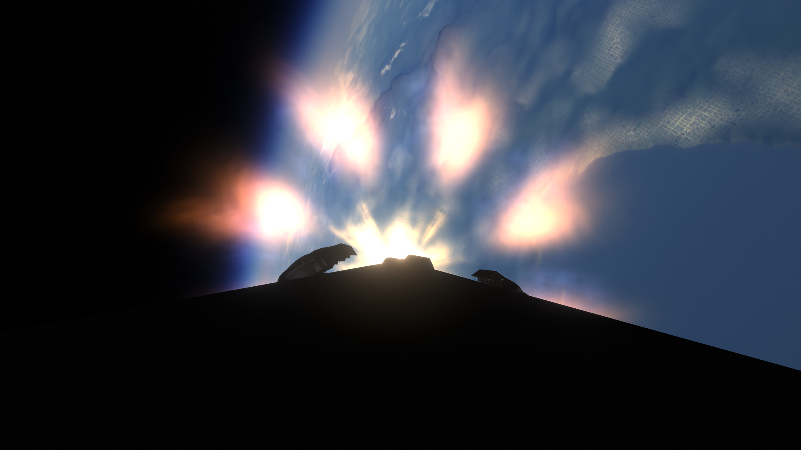

Próximas misiones
Descubre nuestras misiones más esperadas y el futuro de la exploración espacial.
Estadísticas de Lanzamientos
Lanzamientos Exitosos
Total: 0
Aterrizajes Exitosos
Exitosos: 0
Lanzamientos Falcon 9
0
Lanzamientos Falcon Heavy
0
Intentos de aterrizaje
0

Eyes Above The Horizon 6
Fecha: NET 13 de junio, 2025
Vehículo: Falcon 9 Block 5
Estado: Programado


Eyes Above The Horizon 4
Fecha: 30 de abril de 2025
Vehículo: Falcon 9 Block 5
Estado: Éxito

Eyes Above The Horizon 3
Fecha: 28 de abril de 2025
Vehículo: Falcon Heavy
Estado: Éxito



Thermodynamic & Aerodynamic Stress Test No. 1
Fecha: 22 de Marzo, 2025
Vehículo: Falcon 9 Block 5
Estado: Éxito

Eyes above the Horizon 2
Fecha: 04 de Marzo, 2025
Vehículo: Falcon 9 Block 5
Estado: Éxito

Eyes above the Horizon 1
Fecha: 04 de Marzo, 2025
Vehículo: Falcon 9 Block 5
Estado: Éxito


Falcon Heavy • USSF-15
Fecha: 24 de Febrero, 2025
Vehículo: Falcon Heavy
Estado: Éxito
Cliente: Airon inc

Falcon 9 Block 5 • MunStrider-1
Fecha: 19 de Febrero, 2025
Vehículo: Falcon 9 Block 5
Estado: Éxito

Crew Dragon • Retorno a casa
Fecha: 19 de Febrero, 2025
Vehículo: Crew Dragon
Estado: Éxito

Falcon 9 Block 5 • MoonRadar-1
Fecha: 11 de febrero de 2025
Vehículo: Falcon 9 Block 5
Estado: Éxito

Falcon 9 Block 5 • NROL-12
Fecha: 07 de febrero de 2025
Vehículo: Falcon 9 Block 5
Estado: Éxito

Falcon 9 Block 5 • Crew Demo 2
Fecha: 25 de enero de 2025
Vehículo: Falcon 9 Block 5 • Crew Dragon
Estado: Éxito

Falcon 9 Block 5 • GPS-2
Fecha: 24 de enero de 2025
Vehículo: Falcon 9 Block 5
Estado: Éxito

Falcon 9 Block 5 • GPS-1
Fecha: 23 de enero de 2025
Vehículo: Falcon 9 Block 5
Estado: Éxito
Galería de Lanzamientos